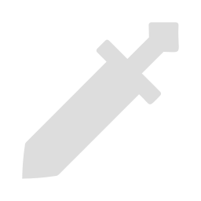

SVINORIS
⭐⭐⭐⭐⭐ Одноручный меч

Сотканный из тысячи нитей гнили и тысячи молитв о пощаде меч, разрушающий осколки материи.
Оружие было неизвестно кем создано, неизвестно кто его владелец, неизвестно зачем оно такой формы. О нём ничего известного нет.
Повышает HP героя на 20%. Когда экипированный персонаж использует элементальный навык, то он повышает крит. урон на 24% на 11 секунд.
Если экипированный персонаж наносит элементальный урон базовой атакой, то он дополнительно получает эффект Финис Оперис: увеличивает урон звёздных реакций на 40% на 9 секунд. Когда экипированный персонаж активирует звёздные реакции, то он дополнительно получает 24% силы атаки на 9 секунд.
Если экипированный персонаж вызывает колебание HP, то он дополнительно увеличивает бонус крит. урона с вышеописанного эффекта на 75%.